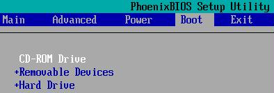
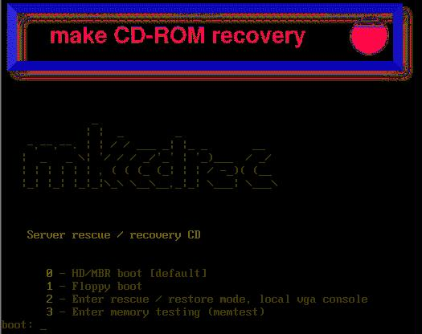
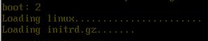
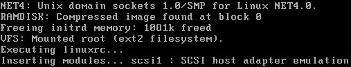
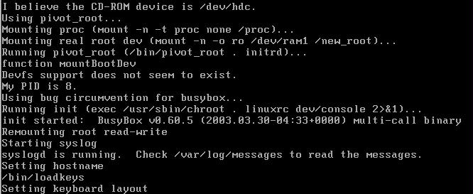

To be able to boot from a CD-ROM made by mkCDrec make sure the computer’s BIOS is capable of booting off a CD. Therefore, it might be necessary to enter the Setup and modify the boot sequence as follow:

You will see a message from syslinux (or isolinux) when the boot process starts from the CD-ROM.
Then the boot process stops and waits on your input (isolinux only, when mkCDrec Utilities are installed). To boot from the CD-ROM enter option 2.

Once option 2 has been entered and the enter key has been pressed the boot process continues with loading the Linux kernel and the initial RAM disk.

As you can see the initial RAM disk gets loaded and uncompressed into the computer’s memory and it launches linuxrc that is part of the initial RAM disk.

The initial RAM disk duty is to find the CD-ROM drive device and to load the necessary loadable kernel modules. Once the CD-ROM device gets mounted the initial RAM disk will read and uncompress the bigger root file system into main memory. If this step is successful it will activate the root file system via pivot_root (for linux kernel 2.4 and above) as shown below.

The root file system uses BusyBox, the Swiss nice under Linux tool boxes, as an all-in-one utility among many other Unix binaries. Once BusyBox activation is successful you will see a more or less normal boot sequence all be it much less then a normal Linux distribution.
It boots up to the point you will see a prompt appearing. No root password is required to get started.
MkCDrec has 5 console login screens behind each ALT-F1 to ALT-F5 key combinations. Maybe, you will notice that the 5th screen is a bit different as it requests a user and password via the login process.
Valid users are root, admin or mkcdrec and the password is “mkCDrec”. The idea is to add an automatic menu behind it to simplify the restore/recover situation.
So far mkCDrec disaster recovery is mend for administrators, which are used to work with command line interfaces.

From this point on you can use mkCDrec as a rescue tool or for any other non-destructive purposes.
Please note that mkCDrec CD-ROMs are a very powerful tool if used by the wrong people, if you understand what I mean. Keep the images (CD-ROMs) in a safe place! |
The Itanium systems are using ELF to bootstrap the Linux kernel, therefore, we cannot use e.g. isolinux to create a bootable CD-ROM image.
The EFI Shell is a console interface used to launch applications (such as the Red Hat Enterprise Linux installation program), load EFI protocols and device drivers, and execute simple scripts. It is similar to a DOS console and can only access media that is FAT16 (VFAT) formatted.
The EFI Shell also contains common utilities that can be used on the EFI system partition. These utilities include edit, type, cp, rm, and mkdir. For a list of utilities and other commands, type help at the EFI Shell prompt.
The EFI Shell contains a bootloader called ELILO. Additional information on EFI can be found at the following URL:
http://developer.intel.com/technology/efi/index.htm
Each Itanium system contains a FAT16 (VFAT) system partition that is mounted on /boot/efi which contains the Linux kernel as well as the ELILO configuration file (elilo.conf).
Mkcdrec creates a bootable image for CD-ROM and a recovery image stored under the /boot/efi/efi/recovery directory.
Important notice is that you better enable SERIAL=”ttyS0” in the Config.sh file if you want to work with the LAN console and have no real access to any VGA console.
To boot from the local EFI partition interrupt the boot process and enter the EFI shell and select the local disk (e.g. fs0: ) and cd to efi/revovery and type elilo to boot (without any physical CD-ROM made).